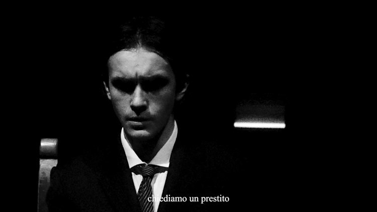
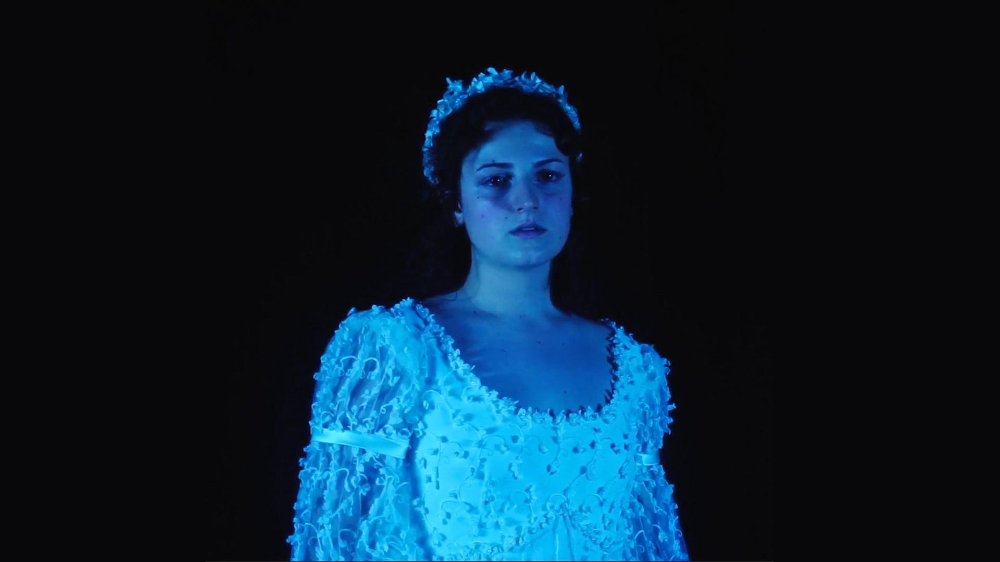
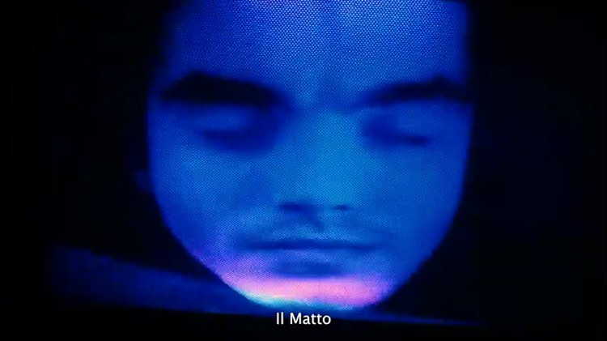

Il Matto e la Pesca
cortometraggio bi-lingue
Il progetto si ispira liberamente al cortometraggio “Signò Belluscone” di Ciprì e Maresco e i personaggi sono ispirati dalla trilogia di opere “I Giochi dell’Eternità” di Antonio Moresco.
Sinossi:
La Pesca, giovane sposa, Il Matto, giovane sposo russo. Questi due personaggi fuori dal tempo fanno molteplici appelli al “Signor Presidente” chiedendo un prestito per sfamare la famiglia. Il sempre-presente “figlio” è sul punto di nascere…

Cast
IL MATTO: Boris Pimenov
LA PESCA: Sveva Gini
LA BAMBINA: Egle Spaccarelli
IL SACERDOTE: Filippo Brancato
LA MUSA: Giuliana D’Alessandro
La Donna Avvolta nella carta stagnola: Sonia Ben Chettouh
MESSAGGERO DALLE LABBRA DIPINTE NUMERO 1: Sergio Masiero
MESSAGGERO DALLE LABBRA DIPINTE NUMERO 2: Gaia Picchi
MESSAGGERO DALLE LABBRA DIPINTE NUMERO 3: Alessandro Lazzari
Regia
Regista: Boris Pimenov
Aiuto regia: Sveva Gini
Assistenza alla regia: Gaia Picchi
Produzione
CINICA MATRICE
con il supporto di SARTORIA CARONTE A.P.S
(Cinica Matrice è un collettivo artistico informale under 25 sotto il tutoraggio di Sartoria Caronte)

Maestranze
Editor: Boris Pimenov
D.O.P: Boris Pimenov
Scenografia: Sveva Gini e Cesare Inzerillo
Operatori: Filippo Rizzo e Francesco Parisi
Sound Design e Doppiaggio: Sergio Masiero e Pietro Mattii
